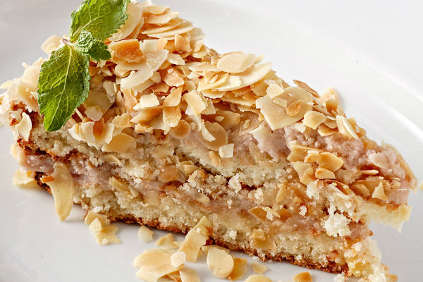
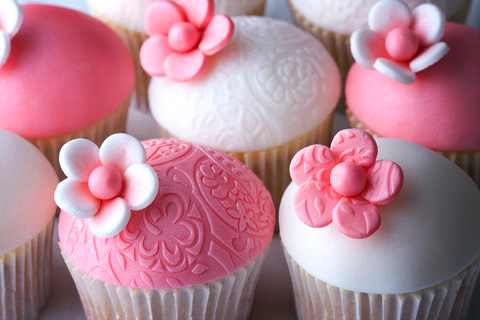

- Бисквитные пирожные из пышного, легкого пористого теста...
- Песочные пирожные
 из рассыпчатого теста в виде...
из рассыпчатого теста в виде... - Слоеные пирожные
 содержат большое количество сливочного...
содержат большое количество сливочного... - Заварные пирожные
 выпекаются в виде трубочек и колец...
выпекаются в виде трубочек и колец... - Крошковые пирожные
 вырабатываются на основе бисквитной...
вырабатываются на основе бисквитной... - Миндальные пирожные  производятся из растертых с сахаром...
- Сбивные пирожные  производятся из растертых с сахаром...